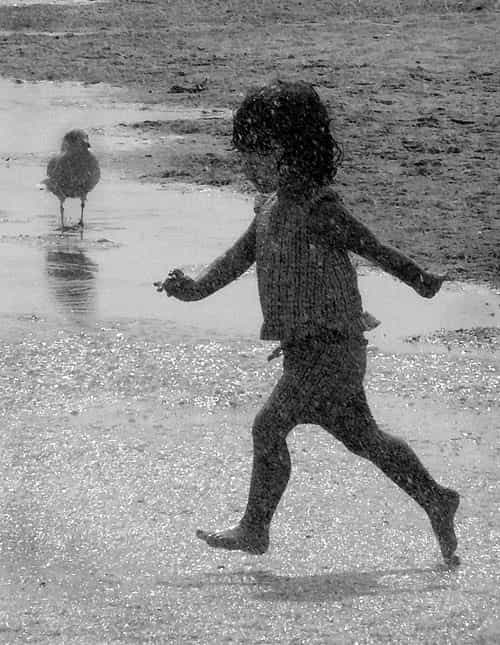
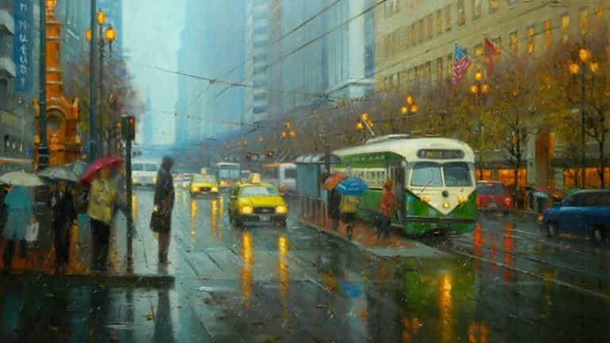

Daryush "Roosh" Valizadeh created ROK in October 2012. You can visit his blog at RooshV.com or follow him on Twitter and Facebook.


On a cloudy summer day, a friend and I went to a cafe. A light rain started not long after we received our drinks, forcing people to hurry from the outdoors to shelter. After talking with my friend for some time, on topics ranging from meeting girls at night to what World War 3 would look like, I noticed a little girl outside in the rain, looking straight up into the sky, eyes squinted just enough to shield the rain drops.
My first instinct was to sense that she was in danger. “Is she alone? Where are her parents?” I looked around and found a couple sitting two tables from me watching her closely. The girl ran to them with a big smile, her face wet. Her mom fixed her jacket and let her run back into the rain. She spread her arms out wide and skipped along from one side of the outdoor courtyard to the other, her hair getting wet.
“Look at the girl,” I said to my friend. “Everyone is running away from the rain but she’s running towards it.”

Whenever I see a little child approaching a rain puddle, I pause to watch. Almost always, the child attacks the puddle, jumping directly into its center to make the biggest splash. Then I wait for the inevitable scolding. “Don’t do that! You’ll get wet!” Already, the child is being socialized to act like an adult. Its playful instincts, weeded out.
Did my parents attempt to socialize me? I don’t remember them giving me a list of dos and donts. They didn’t tell me what was acceptable or not. When I wanted to play as an adult, jumping into puddles of words, I got a lot of people wet.
The little girl outside the cafe did not get bored with the rain. For half an hour, she twirled and danced, jumped and smiled. She couldn’t have been older than three, well before the age she enters school, when teachers and classmates give her their list of dos and donts to sculpt her and take away a simple joy of something as mundane as rain. “You’ll get wet! Come inside! It’s dirty!” Something she used to love will become something she hates and runs from.
Are we so far gone that we can’t enjoy the rain? Did society take us into its clutches, socialize us, iron us out, and hand us a constructed list of what is acceptable and what is not?
One month later, I was at a restaurant alone eating a burger and fries. A heavy storm began. Customers who came inside shook the water off their clothing before ordering at the counter. I took my time, hoping the storm would pass by the time I finished eating, but it was still coming down strong when I walked out the door. The rain was cold. I instinctively hunched over and lowered my head, like anyone else would, but then I told myself to relax. I loosened my shoulders and looked straight ahead.
I began the one-mile walk to my home, as slowly as I could manage. The first few minutes were chilly until my body adjusted to the temperature of the water. I watched other people, hunched over, defenseless without an umbrella, racing towards shelter. I walked by awnings with people in various stages of wetness, waiting for the rain to soften. I walked by taxi cabs with drivers waiting for a wet fare. I walked by other men who seemingly didn’t mind the rain, but whose bent, stiff necks betrayed their indifference, their pace a tick too fast.

Many people looked at me intently, a concentrated look. They seemed to ask, “What is he doing?” I recognized the look because it was the same one I gave to the little girl, a bewilderment, maybe even confusion, that someone is not doing what you would do, what you’re supposed to do.
I didn’t take it far. I didn’t twirl or dance, I didn’t smile. Something a child does every day can be interpreted as insane when done by an adult, though I’m not sure if that says more about the child or the adult.
I was fully soaked by the time I turned on an empty street. Not a soul around. I closed my eyes to hear and feel the rain, and I started to smile, and for the next five seconds I can say I experienced pure joy, something the little girl must’ve felt continuously for nearly an hour. It ended when a thought entered my mind that my phone may be getting wet. I dropped the smile and opened my eyes.
In the last stretch to my front door, I had to pass a lively pub, still at my slow pace. A dozen drinkers were congregating out front, smoking under an awning. They stared at me sternly. The alcohol allowed them to give a response that others had thought but not shown. “This guy is weird.” I felt self-conscious and quickened my pace home.
Twenty five years from now, there will be a heavy rain. A young woman will be caught in it without an umbrella. She will lower her head, tighten her shoulders, and seek shelter. Waiting for the rain to stop, shivering from the cold, she will see an old man, water dripping from his white beard, his eyes closed, smiling at nothing. He’s a crazy old man, she’ll think, but then her mind flashes with a memory of when she was a little child. She looks up into the sky.
This article was originally published On Roosh V.
Read Next: Billions Of Egos Dance For Your Attention